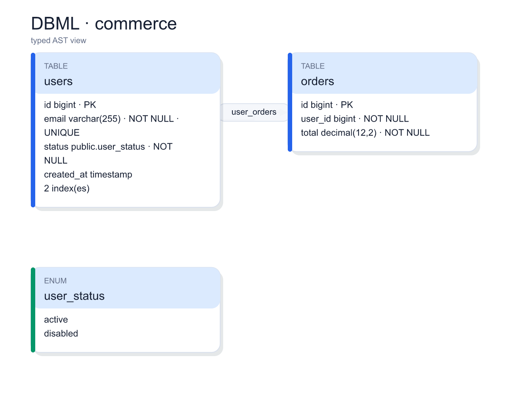
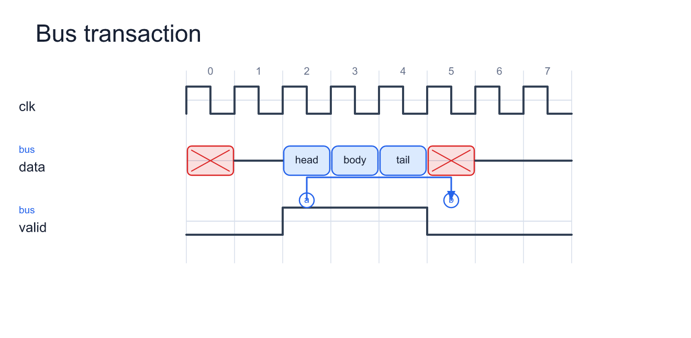
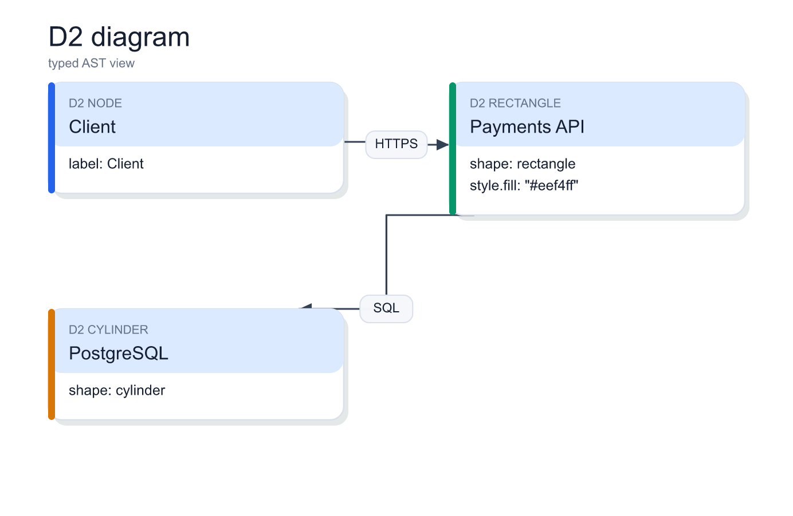
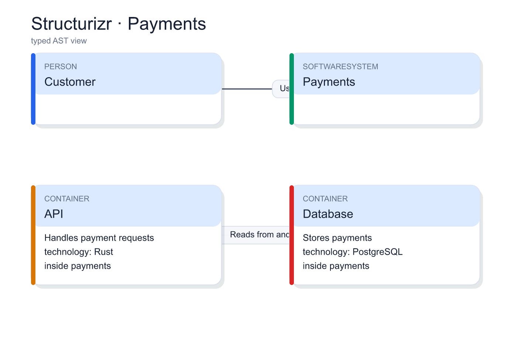
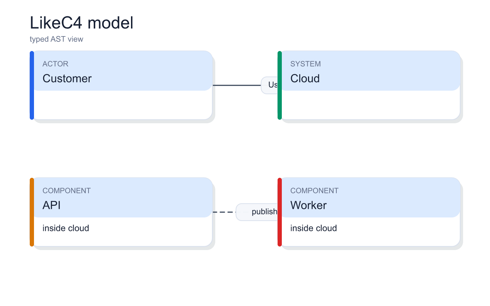
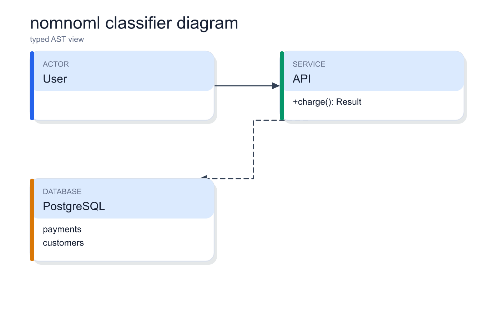
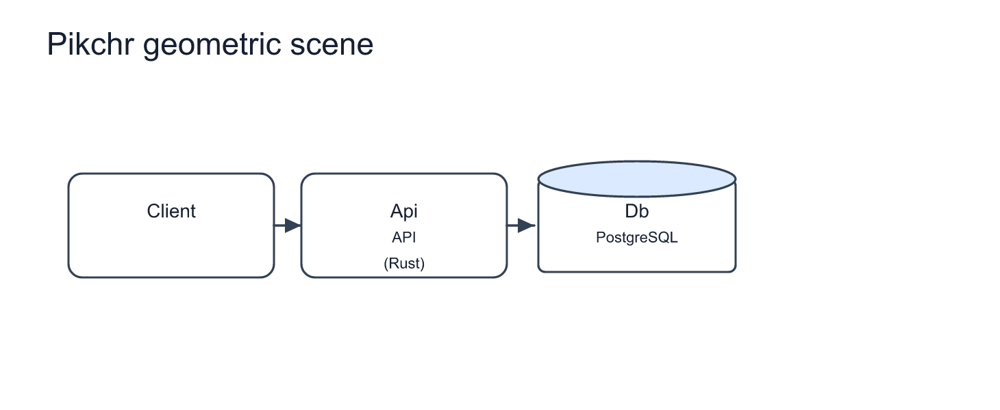

DBML schema
dbml · 692×565 CSS px
2× PNG proof

Seven format-specific renderers share only a finite drawing scene and raster backend. The checkerboard exposes the transparent canvas contract.
dbml · 692×565 CSS px

wavedrom · 660×324 CSS px

d2 · 692×451 CSS px

structurizr · 692×470 CSS px

likec4 · 692×432 CSS px

nomnoml · 692×451 CSS px

pikchr · 730×300 CSS px
